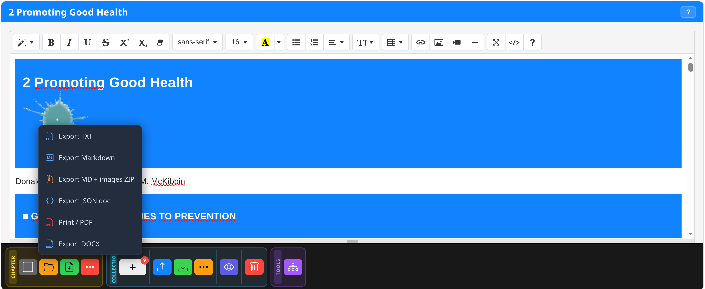

How Noesis works
Each phase connects to the next. You can enter and exit the flow at any point — the hierarchical library lets you pick up where you left off.
📚 Hierarchical Library
The app entry point. Shows books, extracted chapters and snapshots in a dark editorial view.
Import your first book
Click + Add Book in the top bar. Select an .epub file from your device. The book is saved in IndexedDB (EpubLibraryDB) and appears immediately in the list.
Open a book in the Reader
Click the book cover. The reader automatically restores the last saved reading position.
Access extracted chapters
For each book, the library shows extracted chapters with their snapshots. Click on a chapter name to open the most recent snapshot. Click on a specific snapshot name to open that version.


📖 Reading and annotating
The main reading environment with hierarchical TOC, translation and highlighting.
Sidebar TOC
Click the Sidebar button to open the expandable hierarchical index. Click a chapter to navigate directly.
Browser translation
Right-click on the page → Translate to English. The browser translates the entire chapter without external APIs.
Highlighting
Select text, then choose the colour in the Highlight dropdown: Yellow (concepts), Green (examples), Pink (terms/names).
Save State
Click Save State to save position + all preferences associated with that book.
✏️ Extract and write
One click on Extract Chapter opens directly Noesis Editor — the unified Summernote editor with the chapter content already loaded.
Navigate to the desired chapter
Use the sidebar TOC or navigation arrows to reach the chapter you want to extract.
Click Extract Chapter
The dropdown offers two options: Current chapter only (focused) or Current + all sublevels (entire hierarchical section assembled automatically).
Noesis Editor opens in a new tab
The Summernote editor opens with all inline images (base64) and content already loaded. You can immediately highlight, collect chunks, save snapshots and edit text — all in the same environment. The chapter is registered in noesisLibraryDB.
📸 Snapshot versioning
One of the most powerful features of v810. The Snapshot system creates a permanent backup of your work in HTML format on the local filesystem.
Click Save (green button) in the Chapter toolbar
The green Save button in the lower Chapter toolbar section opens a prompt showing the proposed filename.
Optional: add a label
The prompt lets you add a custom label to the filename. Examples: "firstRead", "afterChunks", "finalVersion".
Two files are generated
Noesis produces two HTML files simultaneously: _clean (without highlight colours) and _annot (with all highlights). Both are downloaded and also saved in IndexedDB. A confirmation toast appears.
📦 Chunk Collections
While working on the extracted chapter, you can collect fragments — called chunks — to assemble your final document.
Text: select and click [+]
Select the desired text in the editor with mouse or touch. Click the [+] button in the Collection toolbar section. A toast confirms the addition.
Images: double tap or long press
Double-tap (desktop) or long press (600ms, Android) on an image. It is added directly without the [+] button.
Tables: long press on the table
Long press (600ms) on a table cell. The entire table is collected as a chunk.
Export JSON
Click Export JSON in the Collection toolbar. A JSON file with all chunks is downloaded. Import it later to rebuild your document.

📤 Export and share
The Noesis Editor supports multiple export formats for all use cases.
Opens the browser print dialog with the chapter formatted for printing. For advanced rendering, use PDF.js Viewer from the Library Tools.
DOCX
Word document with full formatting. Compatible with LibreOffice, Google Docs and Microsoft Word.
Markdown
Markdown format with or without images as ZIP. Ideal for static blogs, GitHub or documentation.
HTML for CMS
Copies the complete HTML to clipboard. Paste directly into WordPress, Ghost or Webflow.

Recommended paths
Get the most out of Noesis
Use a local server
For EPUB with complex resources, start a local server: python -m http.server 8000. Avoids CORS restrictions with the file:// protocol.
Save snapshots often
Before any major editing operation, save a snapshot. It takes 2 seconds and protects against accidental loss of work.
Slim down large EPUBs
If an EPUB has too many images, use ePub Slimmer before importing. Significantly reduces loading time and IndexedDB space.
Android: use Chrome
On Android, Chrome offers the best compatibility with all Noesis features including File System Access API for snapshots.